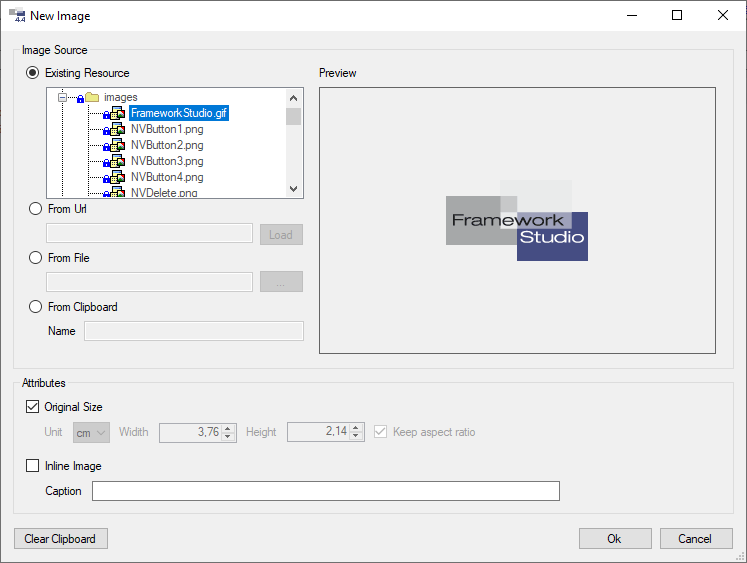

Editor
 *Dokumentations-Editor in Framework Studio
*Dokumentations-Editor in Framework Studio
Zugang zum Editor der verschiedenen Elemente
Da an verschiedenen Elementen im Framework Studio dokumentiert werden kann, werden nachfolgend alle Einsprungpunkte zum Editor aufgezeigt.
Documentation-Element
Da das Documentation-Element keine andere Funktion hat außer Freitexte in Form von DocML zu verfassen, besteht das Hauptformular eines Documentation-Elements aus dem Editor selbst.
Das Documentation-Element besteht praktisch nur aus einem Editor:

Form
Um ein Form zu dokumentierten, muss dieses geöffnet werden und auf die Registerkarte Documentation gewechselt werden.
Zugang zum Editor über den Reiter Documentation:

Form Control
Controls auf einem Form werden über den Form Designer dokumentiert. Dazu muss das gewünschte Control markiert werden. Mit einem Rechtsklick auf das Control öffnet sich das Kontextmenü in dem der Menüpunkt Edit Documentation aufgeführt wird. Alternativ kann über das Property-Fenster von Framework Studio im Bereich Documentation auf den Button mit den drei Punkten geklickt werden. Der Editor öffnet sich für die Controls als modaler Dialog über dem Form Designer.
Aufrufen des Editors für ein Control:

Component Property
Um ein Property zu dokumentieren, muss in der Component das jeweilige Property ausgewählt sein. Danach kann die Registerkarte Documentation ausgewählt werden.
Dokumentation eines Properties:

DBColumn
Um eine Datenbankspalte zu dokumentieren, muss an der DBTable die gewünschte Spalte ausgewählt werden. Danach kann die Registerkarte Documentation ausgewählt werden.
Dokumentation einer DBColumn:

Metadatentyp
Um einen Metadatentyp zu dokumentierten, muss dieser geöffnet werden und auf die Registerkarte Documentation gewechselt werden.
Dokumentation eines Metadatatypen:

Arbeiten mit dem Editor
Der Dokumentationseditor ist ähnlich intuitiv bedienbar wie z.B. ein normaler Texteditor in Microsoft Word oder anderen Textverarbeitungsprogrammen. Es wird der Text markiert, auf den eine Formatierung angewendet werden soll und das jeweilige Icon in der Werkzeugleiste geklickt, um die Formatierung an- oder auszuschalten. Bei Textbausteinen wie Tabellen oder Listen wird der Cursor an die Stelle gesetzt, an der das gewünschte Element eingefügt werden soll.
Info Panel
Info Panel und Link zum Chapter Tree im Editor:

Über die Radiobuttons im Info Panel kann zwischen verschiedenen Ansichten des Editors umgeschaltet werden.
- None: Zeigt nur den DocML-Editor für die ausgewählte Sprache.
- Preview: Zeigt zusätzlich zum DocML-Editor das Vorschaufenster an (wird automatisch aktiviert, wenn in der Werkzeugleiste geklickt wird).
- Other: Zeigt zusätzlich zum DocML-Editor einen zweiten DocML-Editor im Lesemodus an, um zeitgleich eine andere Sprache oder eine andere Dokumentation aus einem anderen Package bereitzustellen.
Über den Link Open Documentation Tree kann aus jedem Editor heraus der Kapitel-Baum aufgerufen werden. Siehe Chapter Tree.
Werkzeugleiste
Combobox Language

Hier kann die Sprache eingestellt werden, für die im Dokumentations-Editor dokumentiert werden soll. Die DocML-Scripte für die jeweiligen Sprachen sind völlig unabhängig voneinander und beeinflussen sich somit nicht gegenseitig.
Textbox Caption

Dieses Textfeld ist nur an Form-Dokumentationen und Documentation-Elementen verfügbar. Hier wird die Kapitelüberschrift für das fertige Dokument eingegeben. Die Kapitel werden im Chapter Tree verwaltet.
Neue Section
Sie erkennen Neue Section an einem  -Icon.
-Icon.
Fügt an der Stelle des Cursers im Dokumentations-Editor eine neues Section-Tag ein. Dabei wird automatisch eine neue 32-stellige GUID generiert und in das id-Attribut des Tags eingefügt. Von da an steht die Section für Customizing-Zwecke bereit. Siehe Customizing.
Preview anzeigen
Sie erkennen Preview anzeigen an einem  -Icon.
-Icon.
Über diesen Button wird das sich im Editor befindliche DocML in HTML konvertiert und im Preview-Panel angezeigt. Kann das DocML aufgrund von Fehlern nicht korrekt umgewandelt werden, werden die entsprechenden Fehler im Common Errors-Panel von Framework Studio aufgelistet.
Syntax-Check
Sie erkennen Syntax-Check an  -Icons.
-Icons.
Über diese Buttons kann das DocML auf Validität geprüft werden. Der erste Button überprüft das sich im Editor befindliche DocML für die ausgewählte Sprache. Der Button mit dem Zusatz All überprüft das DocML für alle verfügbaren Sprachen, die über die Combobox Language auswählbar sind. Bei einem Klick auf den Preview-Button wird automatisch erst eine Validierung des DocML’s für die aktuelle Sprache durchgeführt.
Schriftart
Sie erkennen Schriftart an einem  -Icon.
-Icon.
Formatiert den im Editor markierten Text in der ausgewählten Schriftart. Um die finale Dokumentation der Anwendung möglichst homogen zu halten, stehen nur zwei Schriftarten zur Auswahl
- Normal: Wird in HTML und Word in Arial konvertiert
- Code: Wird in HTML in ein <code>-Tag geschrieben, im Word wird Courier New verwendet.
Schriftgröße
Sie erkennen Schriftgröße an einem  -Icon.
-Icon.
Formatiert den im Editor markierten Text in der ausgewählten Schriftgröße. Die Einstellung Normal spiegelt die gängige Standardgröße 11pt in Word wider. Die Schriftgrößenangaben sind relativ gehalten, da aus DocML unterschiedliche Ausgabeformen generiert werden können (HTML, Word).
Schriftfarbe
Sie erkennen Schriftfarbe an  -Icons.
-Icons.
Formatiert den im Editor markierten Text in der ausgewählten Schriftfarbe. Es können die Schriftfarbe sowie die Hintergrundfarbe für den Text ausgewählt werden.
Textformatierungen
Sie erkennen Textformatierungen an  -Icons.
-Icons.
Umgibt den im Editor ausgewählten Text mit dem entsprechenden Formatierungstag. Zur Auswahl stehen:
 Fett
Fett Kursiv
Kursiv Unterstrichen
Unterstrichen Durchgestrichen
Durchgestrichen Tiefgestellt
Tiefgestellt Hochgestellt
Hochgestellt
Ausrichtung
Sie erkennen Ausrichtung an  -Icons.
-Icons.
Richtet den im Editor markierten Text nach Wunsch links, mittig, rechts oder als Blocksatz aus. Die Standardeinstellung ist linksbündig.
Liste
Sie erkennen Liste an einem  -Icon.
-Icon.
Öffnet einen Dialog zum Erstellen einer neuen Auflistung:

List Type
Mit List Type wird die Art der Liste definiert. Unordered stellt eine Liste mit Symbolen dar, während Ordered die Listeneinträge aufsteigend nummeriert.
List Symbol
Nur verfügbar, wenn als Listentyp “Unordered” ausgewählt wurde. Es kann zwischen Disk, Circle und Square gewählt werden.
List Item Count
Legt die Anzahl der in der Liste befindlichen li-Tags fest. Diese können anschließend im DocML beliebig erweitert werden.
Tabelle
Sie erkennen Tabelle an einem  -Icon.
-Icon.
Öffnet einen Dialog zum Erstellen einer neuen Tabelle. Nach dem Klick auf das Symbol wird zunächst ein Panel angezeigt, in dem die Größe der zu konfigurierenden Tabelle ausgewählt werden muss:

Wird mit dem Mauszeiger länger als eine Sekunde auf das Quadrat unten rechts gezeigt, vergrößert sich die Auswahl. Wird mit dem Mauszeiger länger als eine Sekunde auf das Quadrat oben links gezeigt, verkleinert sich die Auswahl.
Nach der Auswahl der Tabellengröße wird der Dialog zum Konfigurieren der Tabelle angezeigt:

Es können alle Parameter der Tabelle eingestellt werden. Dazu gehören Breite, Ausrichtung und Farbe der Tabelle, Spalten, Zeilen und Zellen. Die Werte der Tabelle können durch Spalten, Zeilen und Zellen überschrieben werden. Die Hierarchie der Überschreibungen sieht wie folgt aus:
Tabelle -> Spalte -> Zeile -> Zelle
Mit einem Klick auf den Button Ok werden für die konfigurierte Tabelle die entsprechenden Tags in den Editor generiert und können anschließend mit Werten befüllt werden.
Bild einbinden
Sie erkennen Bild einbinden an einem  -Icon.
-Icon.
Öffnet einen Dialog zum Einbinden eines Bildes in die Dokumentation. Es können nur Bildressourcen aus Framework Studio in die Dokumentation eingebunden werden. Für Bilder von der Festplatte oder aus dem Internet wird eine entsprechende Bildressource angelegt.
Einfügen eines Bildes in die Dokumentation:

Im Bereich Image Source muss zuerst ausgewählt werden, woher das einzubindende Bild stammt. Wenn das Bild schon als Ressource im Framework Studio verfügbar ist, kann diese aus der Baumansicht (Existing Resource) ausgewählt werden. Eine Vorschau des Bildes erscheint auf der rechten Seite.
Es kann auch direkt ein Bild aus dem Internet eingebunden werden (From Url). Damit das Bild in der Dokumentation angezeigt wird, wenn beim Betrachten keine Internetverbindung besteht, muss dieses mit dem Button Load geladen werden. Danach erscheint das Bild in der Vorschau. Die Url des Bildes muss mit Fehler! Linkreferenz ungültig beginnen.
Soll ein Bild von der Festplatte eingebunden werden, muss zuerst der Radiobutton From File aktiviert werden. Danach kann über den Button […] ein Bild von der Festplatte gewählt werden.
Im Bereich Attributes können die Anzeigeeigenschaften des einzubindenden Bildes verändert werden:
Original Size
Verwendet in der Dokumentation die ursprüngliche Größe des Bildes in cm.
Unit
Gibt an, welche Maßeinheit in der Dokumentation verwendet werden soll. Zur Auswahl stehen Zentimeter (cm) und Inch (in).
Width
Breite des Bildes.
Height
Höhe des Bildes (nur aktiv, wenn Keep aspect ratio deaktiviert ist).
Keep aspect ratio
Wenn aktiviert (Standard), wird anhand der eingegebenen Breite des Bildes, die zugehörige Höhe anhand des originalen Seitenverhältnisses berechnet. Das Bild wird somit nicht verzerrt.
Inline Image
Wenn aktiviert, verhält sich das Bild wie ein Schriftzeichen und folgt dem normalen Textfluss. Andernfalls wird vor und nach dem eingefügten Bild ein Zeilenumbruch generiert.
Caption
Nur verfügbar, wenn die Option Inline Image deaktiviert ist. Es kann eine Bildunterschrift angegeben werden.
Warning
Wenn das Bild aus dem Internet oder von der Festplatte eingebunden werden soll, wird nach dem Klick auf den Button Ok ein Dialog angezeigt, der darauf hinweist, dass automatisch eine Framework Studio Resource für das Bild angelegt wird.
Screenshot
Sie erkennen Screenshot an einem  -Icon.
-Icon.
Öffnet einen Dialog zum Einbinden eines automatisch generierten Screenshots des Formulars in die Dokumentation. Diese Funktion ist nur in der Form-Dokumentation verfügbar.

Anhand der Designer-Daten wird ein Screenshot des Formulars generiert. Sollten Tabellen mehr Spalten haben, als in der Breite angezeigt werden können, werden die Spaltenköpfe umgebrochen und mehrzeilig fortgeführt.
Im Bereich Attributes können die Anzeigeeigenschaften des einzubindenden Screenshots verändert werden:
Original Size
Verwendet in der Dokumentation die ursprüngliche Größe des Formulars in cm.
Unit
Gibt an, welche Maßeinheit in der Dokumentation verwendet werden soll. Zur Auswahl stehen Zentimeter (cm) und Inch (in).
Width
Breite des Screenshots.
Height
Die Höhe des Bildes wird automatisch anhand des Seitenverhältnisses des Formulars berechnet.
Link
Sie erkennen Link an einem  -Icon.
-Icon.
Öffnet einen Dialog zum Einfügen eines Querverweises oder eines Hyperlinks.

Es kann im DocML sehr einfach auf ein anderes Kapitel (Formular oder Documentation-Element) verwiesen werden oder ein Hyperlink ins Internet bereitgestellt werden.
Bei einem Querverweis auf ein Kapitel muss das entsprechende Form oder Documentation-Element aus der Baumansicht ausgewählt werden.
Für einen Hyperlink ins Internet kann eine beliebige URL beginnend mit Fehler! Linkreferenz ungültig eingegeben werden.
In der Textbox Text wird festgelegt, wie der Link in der Dokumentation angezeigt werden soll.
Indexeintrag
Sie erkennen Indexeintrag an einem  -Icon.
-Icon.
Öffnet einen Dialog zum Einfügen eines Indexeintrages in die Dokumentation.

Im Export Wizard kann definiert werden, ob in der gerenderten Dokumentation ein Index erstellt werden soll. Kapitelüberschriften (von Forms und Documentation-Elementen) werden dem Index automatisch hinzugefügt.
Über den Dialog ist es möglich, manuell einen Indexeintrag zu generieren. Dabei muss der Haupteintrag definiert werden. Optional kann ein Untereintrag angegeben werden.
Basisaufruf
Sie erkennen Basisaufruf an einem  -Icon.
-Icon.
Nur verfügbar in den Dokumentationen von Controls, Component Properties, DBColumns und Metadatentypen. Erstellt ein base-Tag, welches die Basisdokumentation des aktuellen Elements (Controls, Component Properties, DBColumn oder Metadatentyps) in die Dokumentation mit einbindet.
Mehr Information hierzu finden Sie im Kapitel Vererbung
Linie
Sie erkennen Linie an einem  -Icon.
-Icon.
Erstellt an der Curser-Position im Editor ein line-Tag. Dieses generiert in der Dokumentation eine schwarze Linie über die gesamte Seitenbreite mit anschließendem Zeilenumbruch.
Zeilenumbruch
Das br-Tag ist sicherlich das am häufigsten verwendete Tag in einer Dokumentation in DocML. Es wäre sehr umständlich, wenn jedes Mal, wenn ein Zeilenumbruch in der Dokumentation eingefügt werden soll, ein Button in der Werkzeugleiste geklickt werden müsste. Dies würde den Schreibfluss mit der Tastatur erheblich behindern.
Um ein br-Tag ([br/]) an der Cursorposition einzufügen, muss im Editor nur <STRG + Enter> gedrückt werden. Es wird ein br-Tag eingefügt und automatisch in die nächste Zeile gesprungen.

Text markieren
Alle Formatierungsfunktionen des Editors wie z.B. Fettschrift oder Ausrichtung des Textes funktionieren ähnlich wie in einem WYSIWYG-Editor. Es wird Text markiert und dann die gewünschte Formatierungsoption aufgerufen. Der Unterschied des DocML-Editors ist allerdings, dass sich im markierten Text auch DocML-Tags befinden können, wie folgendes Beispiel zeigt:

Dies ist allerdings absolut kein Problem. Soll z.B. der oben markierte Text kursiv geschrieben werden, kann einfach in der Werkzeugleiste der entsprechende Button geklickt werden. Der Editor erkennt die Markierung und alle Tags darin und wendet die neue Formatierung entsprechend an:

Es muss also nicht auf Tags geachtet werden, wenn zusätzliche Formatierungen auf schon zuvor formatierte Textstellen angewendet werden.
Auch bei Block-Tags wie Listen kann dieses Verhalten auftreten. Nachfolgend soll z.B. eine gesamte Liste fett gedruckt werden. Da Block-Tags (lst-Tags) nicht in Inline-Tags (b-Tags) auftreten dürfen, kümmert sich der Editor selbst darum und ergänzt die Texte in der Liste automatisch mit den entsprechenden Tags.
Folgende Liste soll komplett fett gedruckt dargestellt werden:

Nach einem Klick auf den Button für Fettschrift in der Werkzeugleiste werden die Listeneinträge automatisch um die jeweiligen b-Tags ergänzt und die Validität des DocML wird erhalten:

Beim Markieren von Texten für Formatierungen muss also nicht explizit an schon vorhandene Tags gedacht werden, der Editor erledigt dies alles automatisch.
Kommentare
DocML bietet die Möglichkeit, in Dokumentationen Kommentare einzufügen, die nicht in die Ausgabe gerendert werden. So können z.B. kleine Notizen oder Erinnerungen in die Dokumentation eingefügt werden. Ein Kommentar-Tag startet mit der Zeichenfolge [-- und endet mit --].

Kommentare sind im DocML an ihrer grünen Farbe zu erkennen und beeinflussen die Ausgabe in keinster Weise. Kommentare können an beliebiger Stelle im DocML platziert werden.
Escape-Zeichen
Die Sprache DocML beinhaltet einige Steuerzeichen wie z.B. eckige Klammern ([ und ]), mit denen die Tags abgebildet werden. Allerdings werden diese Zeichen natürlich auch im Fließtext der Ausgabe benötigt. Dass Framework Studio den Unterschied zwischen einer eckigen Klammer eines Tags und einer normalen eckigen Klammer im Fließtext unterscheiden kann, müssen diese Zeichen mit einem Blackslash (\) escaped werden.

Wie zu sehen ist, werden die Backslashes in der Ausgabe eliminiert. Um einen Backslash als Zeichen in die Dokumentation einzufügen, muss dieser ebenso mit einem weiteren Backslash escaped werden.
Panel Other
Der Editor bietet die Möglichkeit, ein zusätzliches Fenster einzublenden, welches eine Dokumentation aus einem anderen Package oder in einer anderen Sprache anzeigt.

So kann z.B. während die englische Dokumentation für ein Formular erstellt wird, parallel die deutsche Dokumentation angezeigt werden, um besser übersetzen zu können.
Language
Mit dieser Combobox wird die Sprache der anzuzeigenden Dokumentation gewählt.
Package
Mit dieser Combobox kann zwischen den Dokumentationen des Elementes in unterschiedlichen Packages gewählt werden.
Mehr Informationen über Package-übergreifende Dokumentation und das Customizing befindet sich in den Kapiteln Vererbung und Customizing.